4. Runoff Generation and Watershed Hydrology#
Course Website
Readings#
Gupta, R.S., 2017. Hydrology and Hydraulic Systems, pp 338-340
Brutsaert, W., 2005, Hydrology: An Introduction. Cambridge University Press
Horton, R. E. (1933). The Role of Infiltration in the Hydrologic Cycle. Transactions, American Geophysical Union, 14, 446–460.
Chow, V.T., Maidment, D.R., Mays, L.W., 1988, Applied Hydrology: New York, McGraw-Hill.
Dunne, T., & Leopold, L. B. (1978). Water in Environmental Planning. W.H. Freeman.
Dunne, T., & Black, R. D. (1970). Partial Area Contributions to Storm Runoff in a Small New England Watershed. Water Resources Research, 6(5), 1296–1311.
Hewlett, J. D., & Troendle, C. A. (1975). Non-point and diffused sources—A hydrologic perspective. In: Proceedings of a symposium on non-point sources of water pollution.
Hall, F.R. (1968). Base flow recessions—a review. Water Resources Research, 4(5), 973–983.
Hewlett, J.D. & Hibbert, A.R. (1967). Factors affecting the response of small watersheds to precipitation in humid areas. Forests Hydrology, 275–290.
Anderson, M.G. & Burt, T.P. (1978). Runoff in the hillslope hydrological system. Earth Surface Processes, 3(4), 361–377.
Baraka, M. 2024, Watershed Delineation in QGIS: A Summary Guide
Florida Delineation Training Watershed (png) Right-Click “Save As…”
Texas Delineation Training Watershed (png) Right-Click “Save As…”
CE3354-LBB-SMALL.zip Compressed files to recreate the example in the GIS workflow section.
{kind=link}
{kind=link}
Videos#
Runoff Mechanisms#
The generation of runoff is typically explained by either an excess of precipitation above infiltration capacity (Hortonian overland flow) or by an excess of saturation above soil storage capacity (Dunne overland flow). There are certainly more explainations.
These two have some historical importance in hydrologic science, so will be examined further.
Hortonian Overland Flow: Excess Precipitation Mechanism of Runoff Generation#
Hortonian overland flow, named after hydrologist Robert E. Horton, refers to a process where rainfall intensity exceeds the soil’s infiltration capacity, resulting in excess water flowing over the land surface. First formalized in Horton’s seminal paper “The Role of Infiltration in the Hydrologic Cycle” (1933), this mechanism remains foundational in hydrology and watershed modeling.
Key Concepts#
Infiltration Capacity Curve: Horton postulated that soil infiltration capacity decreases over time during a storm event, starting from a high initial value and asymptotically approaching a minimum. When rainfall intensity surpasses this curve, the soil cannot absorb the water fast enough, leading to surface runoff.
Threshold Behavior: Unlike saturation-excess runoff (which depends on the soil becoming fully saturated), Hortonian flow is intensity-driven. It can occur even when the soil is relatively dry, provided that the rainfall rate is sufficiently high.
Typical conditions where Hortonian flow models observed behavior well includes:
Arid or semi-arid regions
Urban areas with impervious surfaces
Steep slopes with compacted or crusted soils
Mathematical Representation Horton’s infiltration model is typically written as:
Where:
\(f(t)\) = infiltration rate at time \(t\)
\(f_0\) = initial infiltration rate
\(f_c\) = asymptotic (minimum) infiltration rate
\(k\) = is a decay constant related to how quickly the soil reaches the asymptotic rate
Runoff (overland flow) occurs when the rainfall rate \(P(t)\) exceeds \(f(t)\).
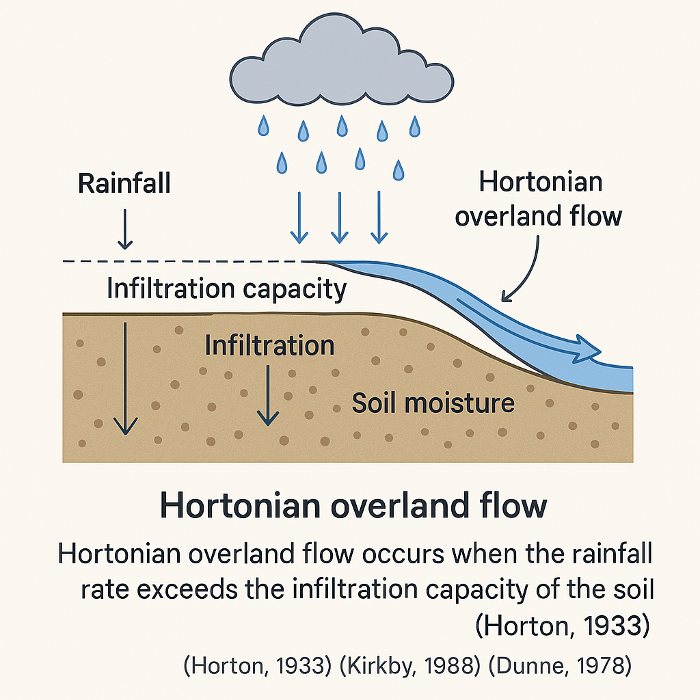
The diagram shows rainfall falling onto the land surface, with part infiltrating into the soil and the excess forming overland flow when the infiltration capacity is exceeded.
Applications and Relevance#
Urban Hydrology: Predicting flood peaks from impervious areas.
Soil Erosion Models: Hortonian flow contributes to detachment and transport of sediments.
Runoff Modeling Tools: SWMM, HEC-HMS, and other hydrologic models incorporate Horton-based infiltration options.
Dunne Saturation Excess Overland Flow: A Soil Saturation Mechanism of Runoff#
Dunne overland flow, named after Thomas Dunne, describes a process where water flows over land surfaces not because of intense rainfall, but because the soil has become fully saturated. Once the soil’s pores are filled to capacity, any additional rainfall—no matter how light—becomes surface runoff.
This concept was formalized through Dunne’s field studies in humid, vegetated catchments, most notably in his 1978 work with Luna Leopold.
Key Concepts#
Saturation Before Rainfall: In Dunne flow, the soil can already be near saturation before a storm begins. Rainfall simply pushes it past the tipping point.
Lateral Subsurface Flow Contribution: Saturation often occurs due to lateral water movement, especially downslope, where a convergence of subsurface flow brings soil to full saturation before rainfall arrives.
Location-Specific: This type of overland flow is most common in:
Humid, forested catchments
Areas with shallow water tables
Soils with low permeability at depth
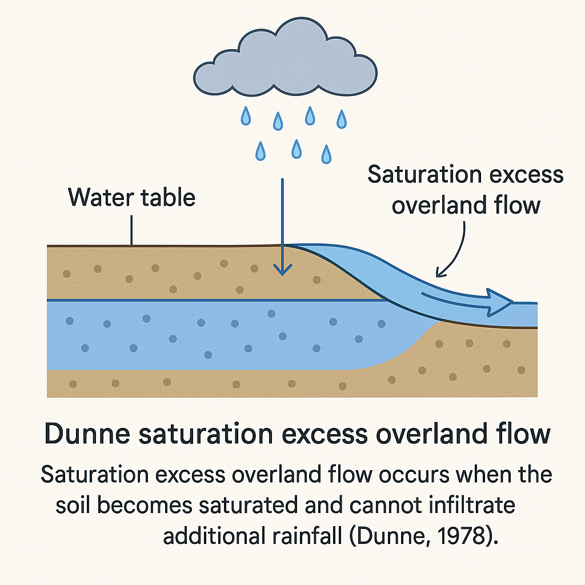 This diagram illustrates how rainfall infiltrates initially, but once the saturation front reaches the surface, additional water cannot enter the soil and flows across the surface, often from lower-lying saturated patches upslope.
Distinction from Hortonian Flow
Feature |
Hortonian Flow |
Dunne Flow |
|---|---|---|
Trigger |
Rainfall exceeds infiltration rate |
Soil becomes fully saturated |
Soil Condition |
Can occur in dry soils |
Requires prior saturation |
Common Environment |
Arid, urban, compacted soils |
Humid, vegetated, shallow soils |
Onset |
Fast, during intense storms |
Often delayed until soils saturate |
Flow Pathways#
Related oncepts are interflow and baseflow (as it appears in streams), these are related to pathways available for runoff to make its way through a watershed.
Interflow (Shallow Subsurface Stormflow)#
Interflow is defined as lateral flow of water that occurs within the unsaturated soil zone during or shortly after rainfall, usually downslope above a low-permeability layer.
Key Characteristics:#
Occurs beneath the surface but above the water table
Moves laterally downslope toward streams or seepage zones
Influenced by soil layering, slope, and moisture content
Sometimes mistaken for baseflow when it reaches channels
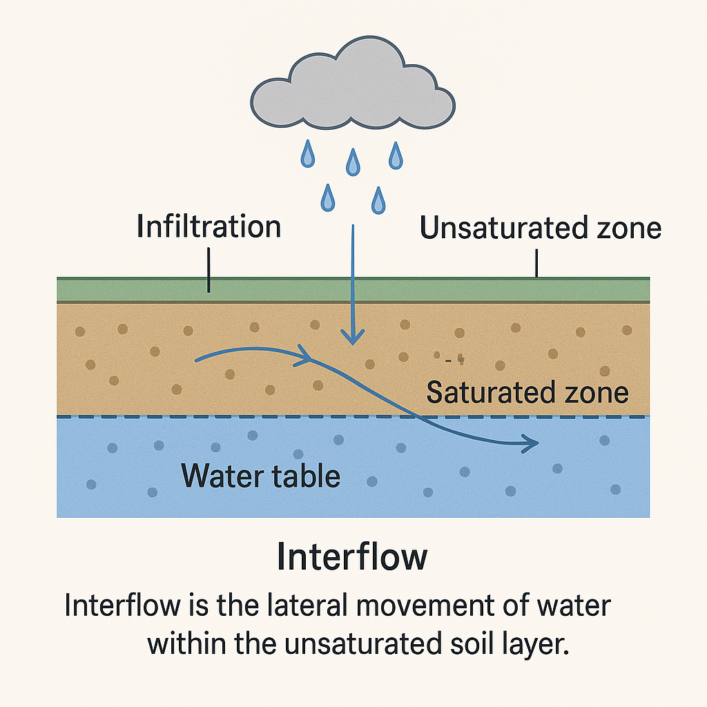
Baseflow#
Baseflow is the portion of streamflow that is sustained between rainfall events, fed by delayed pathways such as groundwater discharge.
Key Characteristics:#
Originates from deep percolation and groundwater flow
Maintains streamflow during dry periods
Typically slow and stable compared to storm runoff
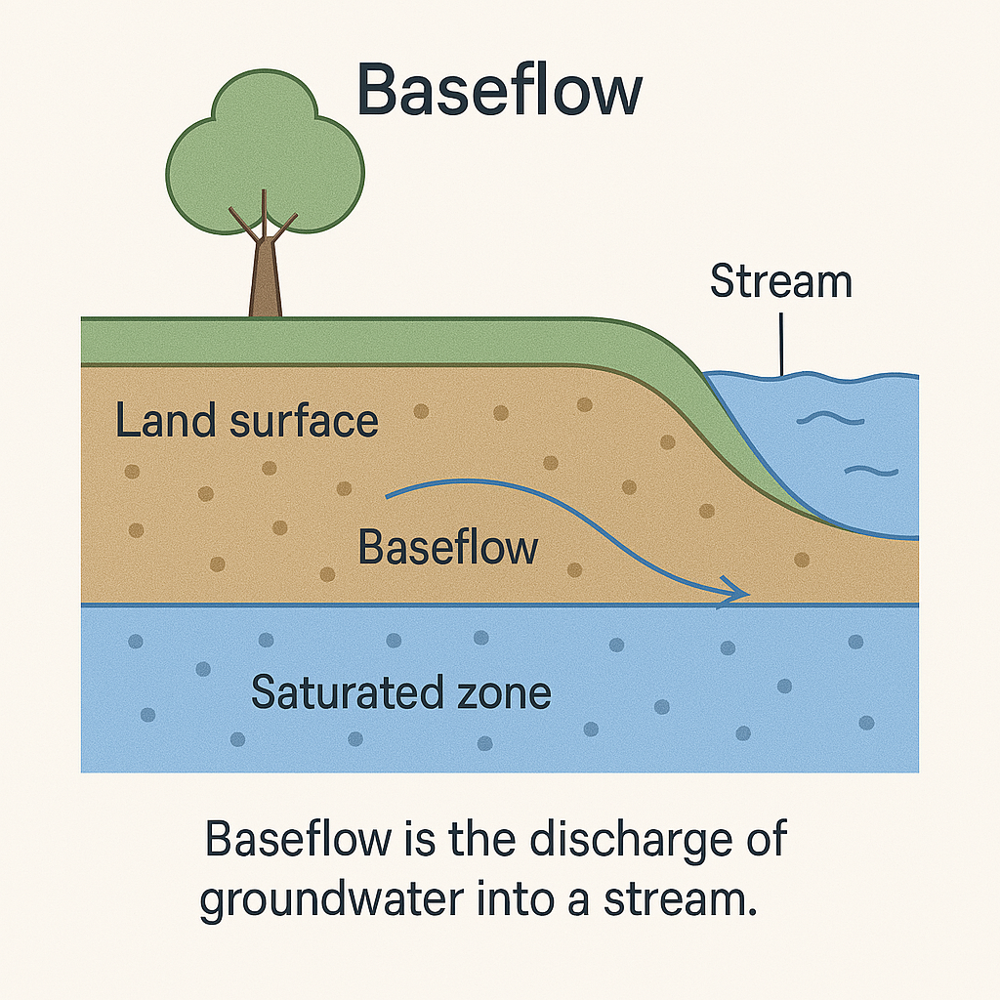
Summary of Runoff Mechanisms and Flow Pathways#
Feature |
Hortonian Flow |
Dunne Flow |
Interflow |
Baseflow |
|---|---|---|---|---|
Trigger |
Rain > Infiltration Rate |
Soil becomes fully saturated |
Subsurface saturation |
Groundwater discharge |
Location |
Surface |
Surface |
Unsaturated zone, downslope |
Saturated zone below water table |
Typical Timing |
Fast, during intense storms |
Delayed until saturation |
Short lag, fast or moderate |
Long lag, sustained |
Common Setting |
Urban, arid soils |
Humid, vegetated catchments |
Sloped terrains with clay layers |
All stream-fed watersheds |
Watershed Characteristics and Delineation#
In engineering hydrology, understanding watershed characteristics is fundamental to estimating runoff, designing drainage structures, and managing water resources. The physical parameters of a watershed—its boundaries, area, slope, and land use—strongly influence both the quantity and timing of runoff.
What are Watersheds?#
A watershed is the area of land that drains all the streams and rainfall to a common outlet such as the outflow of a reservoir, mouth of a bay, or any point along a stream channel (this outlet is called a pour-point in GIS-speak). The term “watershed” is often used interchangeably with “drainage basin,” which may make the concept easier to visualize.
Note
A common outlet implies that the various discharges have concentrated into a a definable conduit (as opposed to sheet or overland distributed flow). The distributed flows are part of the watershed, but at times make engineering analysis at smaller scales challenging as no single control point exists.
A watershed can encompass a small area of land that drains into a trickling creek. It can encompass multiple states in the Midwest, all draining into the Mississippi River. Or it can encompass multiple countries draining into the Atlantic Ocean. No matter where you are standing or sitting right now, you are in a watershed.
Water is constantly in motion, be it via ocean currents, precipitation, or slowly moving through underground aquifers. Any given watershed is part of the larger whole of our global water supply.
Smaller watersheds can make up larger watersheds. The Mississippi River has many tributaries (each of which has its own watershed), and in turn empties into the Gulf of Mexico, which connects to the Atlantic Ocean. The U.S. Geological Survey delineates our nation’s watersheds as “Hydrologic Units,” which are assigned hydrologic unit codes. These can range in scale from expansive water resource regions covering millions of square miles down to tiny local tributary systems. There are 90,000 hydrologic unit codes designated nationwide.
Some more compact definitions of a watershed include:
Topographic area that collects and discharges surface streamflow through one outlet or mouth (pour point)
The area on the surface of the Earth that drains to a specific location
In groundwater a similar concept is called a groundwater basin – only the boundaries can move depending on relative rates of recharge and discharge
The topographic definition omits that there could be subsurface sewer systems that can cross topographic boundaries.
It’s a big deal in urban areas.
Consider the artist rendering of a watershed

Large watersheds are comprised of smaller interconnected watersheds, thus in the rendering watershed B is a part of watershed A.
Watershed Boundaries#
A watershed boundary defines the spatial extent within which all precipitation drains to a common outlet point. These divides follow the highest ridgelines between basins and can often be visualized as the perimeter around a bowl. In hydrological modeling, boundaries are used to isolate contributing areas and apply water balance equations.
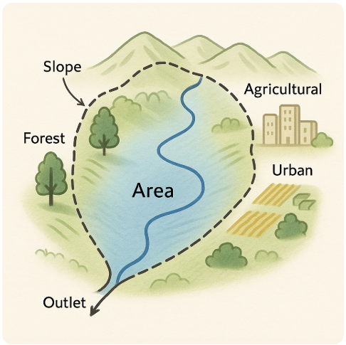
Warning
Errors in defining boundaries lead to incorrect estimation of contributing area, distorting runoff predictions and infrastructure design.
Watershed Area#
The total area enclosed by a watershed boundary is directly proportional to the volume of runoff generated. Larger watersheds tend to produce greater runoff volumes, although the relationship is moderated by other factors like rainfall intensity, storage, and infiltration.
Warning
Area affects peak discharge calculations and is a key input for Rational Method, SCS Curve Number method, and unit hydrograph methods.
Watershed Slope#
Slope determines the velocity of overland and channel flow. Steeper slopes tend to accelerate runoff, reducing infiltration and increasing peak discharges. Slope is typically calculated from Digital Elevation Models (DEMs) and summarized as average basin slope or main channel slope.
Warning
Steep watersheds are more prone to flash flooding and erosion, requiring more robust energy dissipation in hydraulic design.
Land Use and Land Cover#
Land use affects both infiltration and surface roughness. Forested or vegetated land promotes infiltration and delays runoff, while impervious surfaces like roads and rooftops increase runoff volume and reduce lag time.
Warning
Hydrologic models must account for land use when assigning curve numbers, runoff coefficients, or surface roughness values (Manning’s n).
Time of Concentration and Drainage Network Mapping#
Time of Concentration (\(T_c\)) is defined as the time required for runoff to travel from the most hydraulically distant point in the watershed to the outlet. It represents the upper limit of response time and is essential in designing for peak discharge.
The time of concentration is assumed to be comprised of three distinguishable overland flow regimes: sheet flow, shallow concentrated flow, and channelized flow.
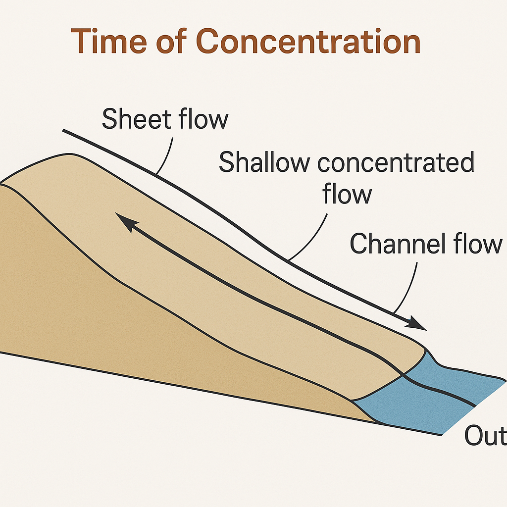
Several empirical equations are used to estimate \(T_c\), including Kirpich, NRCS, and Kerby formulas, each tuned for different conditions. Engineers select the method based on watershed slope, length, and land use.
Warning
Underestimating \(T_c\) leads to overdesigned structures, while overestimating it may result in flood risk due to underestimated peak flows.
Note
Recent emerging tools can simulate watershed response entirely from statistical-mechanical principles and over time are likely to reduce the reliance on \(T_c\) concepts in the future.
Drainage Network Mapping#
The drainage network includes all channels—natural or artificial—within a watershed that convey flow to the outlet. This network governs the routing of water, sediment, and pollutants. It’s typically extracted from high-resolution DEMs using flow direction and accumulation algorithms.
Note
A well-mapped drainage network improves accuracy in hydrograph development, flood modeling, and sediment transport studies.
4.1 Watershed Delineation#
Watershed delineation is a fundamental analytical process in hydrology and environmental science that involves defining the boundaries of a drainage area or catchment. Its result identifies the geographic area from which all precipitation and surface runoff flow into a single point of interest (called the outlet), typically a river, stream, or lake.
The analysis is typically performed:
By-hand and/or semi-automated using digital maps (obsolete, but viable for small areas)
Fully-automated using digital elevation data and geographic information systems (GIS) (current practice)
In all cases the goal is to trace the flow of water and determine the contributing area to a specific point of interest.
Watershed delineation plays a crucial role in various applications, including flood management, water resource planning, and environmental conservation, by providing a spatial framework to understand and manage water-related processes within a defined geographic region.
Warning
Inability to delineate a watershed greatly reduces your utility as a hydrologic engineer, relegating your contributions to secondary support roles rather than core decision-making in water resources planning and management.
Note
The examples below show different ways to delineate a watershed for further engineering efforts. They (the examples) were built at different points in time, so the aesthetics of the examples are different.
Delineation (By-Hand) Workflow#
The following example illustrates what would be considered a by-hand watershed delineation. While much of the visual representation can be produced on a computer, the critical decisions—such as assigning elevation references and determining flow paths—are made manually by the analyst.
By-hand analysis is still appropriate for small areas that fit on one or two map sheets. However, for larger watersheds, automated tools and digital elevation models (DEMs) are far more efficient and reliable.
Map of area of interest
Identify the pour point.

Superimpose a Grid
While not strictly necessary its helpful. The grid serves two purposes, first a reference system and as a raster representation of the watershed (albeit at a coarse resolution)
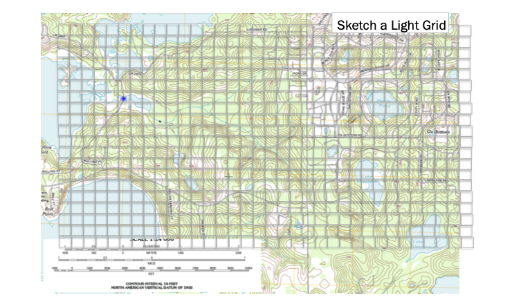
Cell Elevations
Use the grid to estimate average elevations in a grid cell, you use this information to help locate the boundary. Water flows from high to low elevation. Starting from the outlet work uphill until have high point, if its downhill as you cntinue in one direction beyond the point, its possibly the boundary (you are identifying “ridgeline” features).
Simultaneously identify internal water flow paths, these help identify the ridgeline features.

Draw/Refine Boundary Estimates
Using the grid to estimate average elevations in a grid cell, you locate the coarse resolution boundary. Water flows from high to low elevation. Using the internal water flow paths, move upgradient along these paths to refine the boundary delineation.
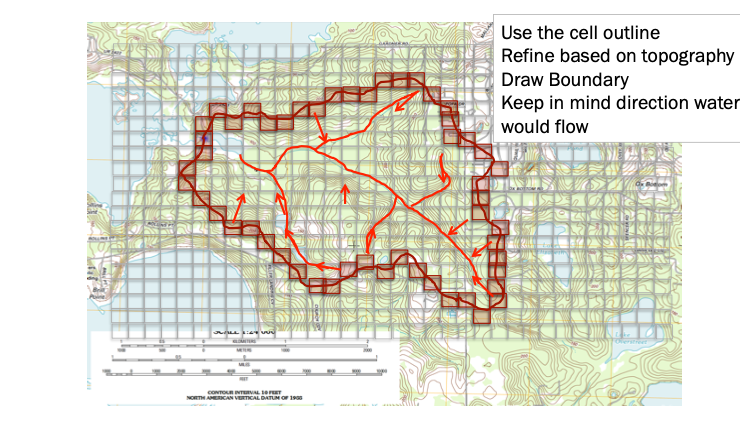
Tidy up Boundary
Tidy up your boundary and declare victory!

From here we can now make measurements (from the map) of things like area, path distances, and slopes along particular paths.
Additional Examples#
Hardin Branch project watershed(s). ce3354-es2-2024-3-ByHandRFS.pdf This was used as a semester project case study to gain HEC-HMS experience.
TBA
Watershed Delineation Workflow Using QGIS#
Several step-by-step examples using QGIS are presented. The steps follow those outlined below. The watershed for these notes is one in Lubbock that you can drive to and visit to obtain ground truth validation.
Here we wish to delineate the watershed that contains the cross-hatched area in the figure below.
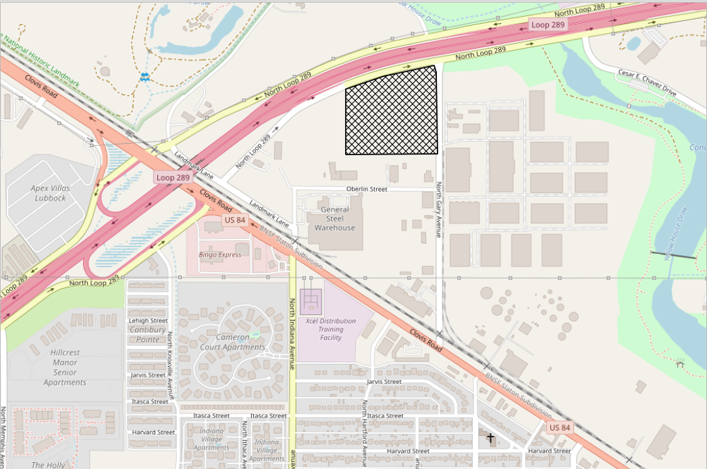
A site we intend to develop into a light-industrial manufacturing facility. Our hydrologic concern is to manage any water that enters the site, assess its impact on existing hydrologic response, and use that to inform any mitigation strategies. So a first step is to understand the projects impact in terms of its hydrologic context - hence we need to delineate the watershed around the site.
Install QGIS (Recommended: Version 3.34 “Prizren”). You can download it from the QGIS website.
Launch QGIS
Open QGIS.
Upgrade all plugins if prompted (this is usually automatic).
Install Key Plugins
Go to Plugins → Manage and Install Plugins, and verify/install the following:
SRTM Downloader(NASA data access — requires credentials)SAGA NextGen Spatial AnalysisCoordinate Capture
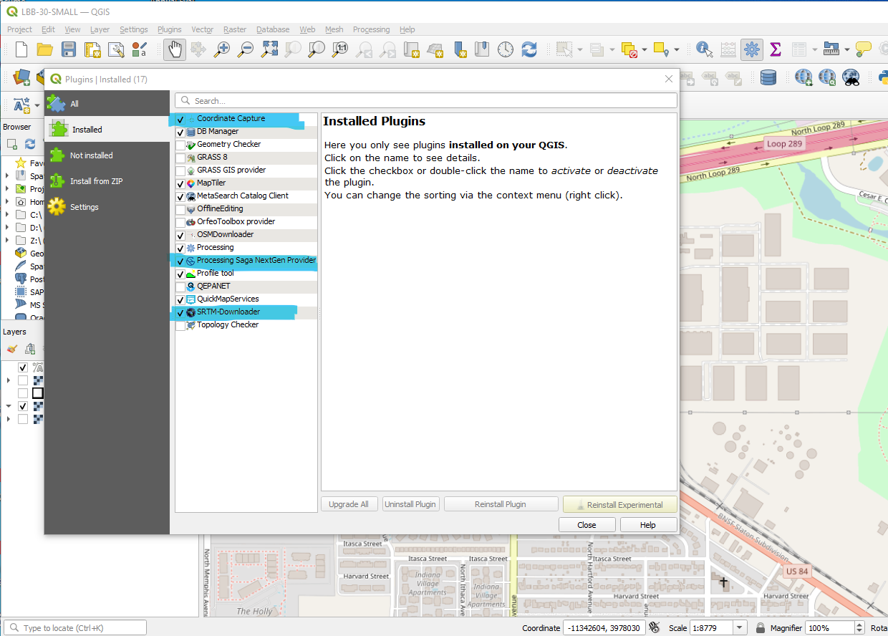 Plugin Manager showing these three plugins selected/installed.
Create a New Project
Add the OpenStreetMap base layer.
Navigate to coordinates near:
Latitude/Longitude:33.61399, -101.88107
(Use CRS:EPSG:3857)Bounding corners of the map window should be:
Lower Left:
-101.89303, 33.60631Upper Right:
-101.86875, 33.62317
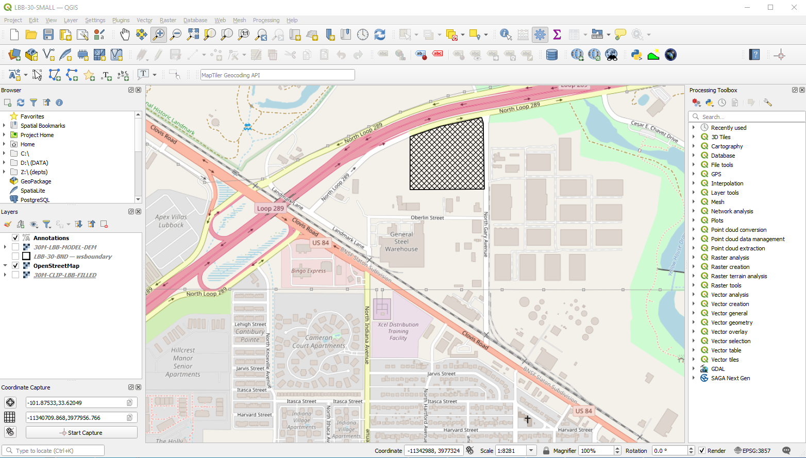 Map canvas zoomed to (approximately) the correct extent, with coordinates shown.
Save the Project
Use File → Save As and choose a permanent location.
Note
Misfortune will come—prepare for it. The wise analyst saves not because they fear failure, but because they accept its inevitability.
QGIS, like all things, is mortal. Crashes may come without warning, processes may stall, and memory may falter. But through frequent saving, you remain undisturbed. Your work persists, not by chance, but by discipline.
To save is to practice foresight. To restore from a save is not defeat—but serenity.
Download 30m Elevation Data
Note
Later in the course, we will work with LiDAR point cloud data. While the conceptual workflow is similar, working with LiDAR introduces a much higher computational load and increases the risk of software crashes or memory exhaustion.
The 30-meter DEMs used in this example are relatively lightweight and easy to manage. The step where we clip the raster to the watershed boundary is a best practice, not just for tidiness, but for performance: working with smaller datasets reduces processing time and the likelihood of failure—especially important when transitioning to high-resolution data like LiDAR.
Use SRTM Downloader to get elevation data for the region.
If you don’t have NASA credentials, the tool will prompt you to create an account.
You may need to retry a few times — firewalls or login issues are common.
After downloading:
Remove unnecessary layers.
Adjust symbology (optional, for prettier displays).
Save the project again.
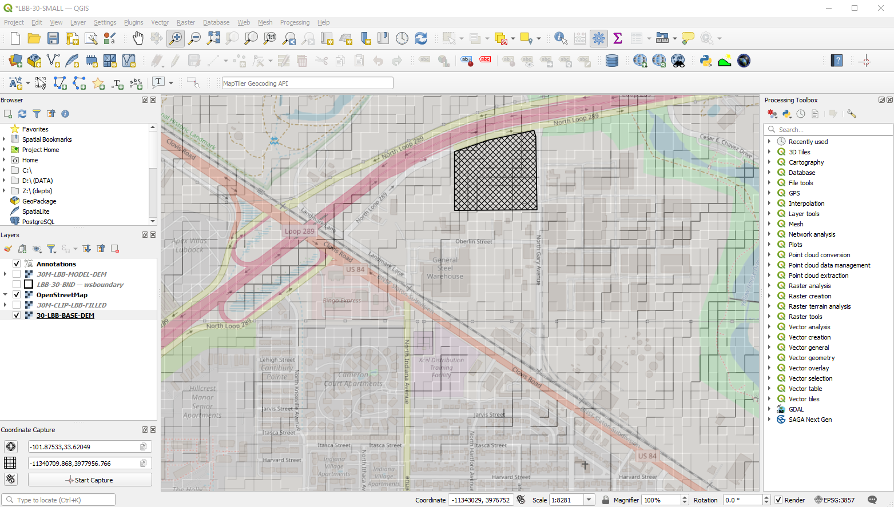 Raster layer loaded, symbology adjusted. By default, QGIS often displays DEMs as a simple grayscale image. In relatively flat areas, this default rendering may appear nearly blank or uniform light gray, making elevation differences hard to distinguish.
To improve visibility, open the Layer Properties → Symbology tab. Here you can switch to Hillshade or apply a color ramp. Hillshade is especially useful in the early stages of watershed analysis for identifying terrain features. You may choose to switch to a color ramp later for final presentations or quantitative interpretation.
Reproject the DEM Raster
Use Raster → Projections → Reproject
Target CRS:
EPSG:3857
Save the result and save the project again.
Clip the DEM
Clip the DEM to match the current display region.
Set no_data to
-9999.0during clipping.
Save the clipped DEM and the project.
Fill Sinks in DEM using SAGA
Use SAGA → Preprocessing → Fill Sinks (Wang & Liu) on the clipped DEM.
Save the filled DEM and the project.
Select Outlet Point
Zoom to the northeast corner of your project extent (the cross-hatched area).
Use the Identify Features tool on the sink-filled DEM to locate the lowest elevation point within the study area. This tool is especially valuable—it allows you to quickly query pixel values and is essential for confirming the actual low point.
In this example, the lowest point falls in the highway median in the northeast corner. This location will serve as the outlet for watershed delineation.
Once identified, use Coordinate Capture to record the easting and northing of this outlet point for use in subsequent SAGA tools.
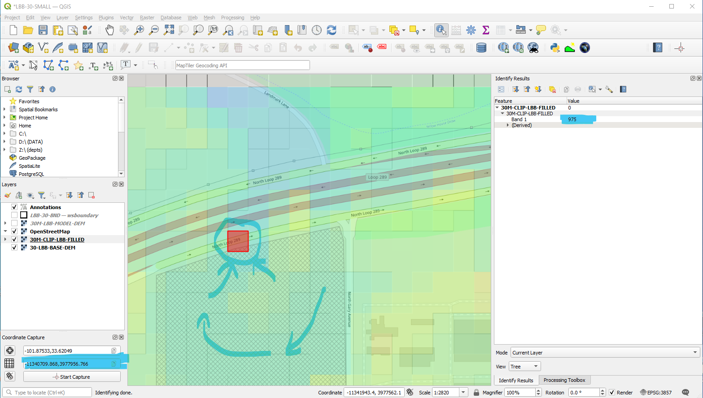 Coordinate Capture tool active and capturing.
Delineate Watershed Using SAGA Upslope Tool
Use SAGA → Terrain Analysis → Upslope Area
Input the captured coordinates
Output: raster representing all upslope area draining to outlet
Save the raster and the project.
Note
Some trial-and-error is required. You may have to move the outlet location around in the grid until the program returns useable output. If you get no output or error, find an adjacent cell of lower elevation (or move uphill) until the algorithm produces a result. You can also experiment with different algorithms (8-direction deterministic is useful).
You need a feel of what the watershed should look like, so a by-hand overview is usually quite useful.
Create Binary Watershed Raster
Open Raster Calculator and use the expression:
("LBB-30M-DTM-UPSLOPE@1" >= 1) * 1
This sets upslope areas ≥ 1 to 1 and all else to 0 or no_data.
Convert Binary Raster to Vector Mask
Use Raster → Conversion → Polygonize (Raster to Vector).
Open the resulting attribute table.
Use Select by Expression with:
"DN" = 1
Right-click layer → Export → Save Selected Features As… to save the mask polygon.
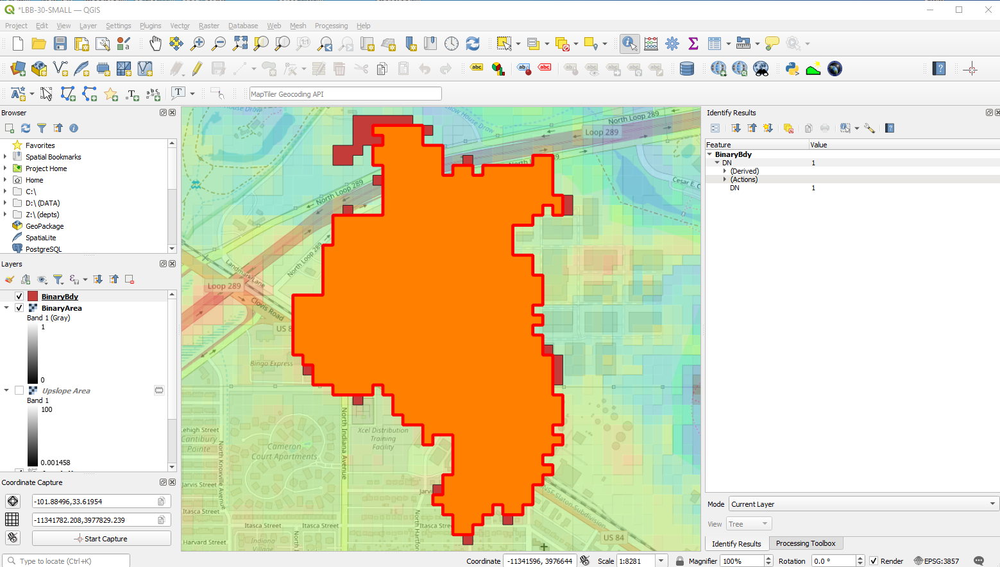 Vectorized raster and selection dialog showing "DN"=1
Final Clip: Cut DEM to Watershed Only
Use Raster → Extraction → Clip Raster by Mask Layer
Mask: your saved watershed polygon
Output: clipped DEM containing only the watershed
Save the raster for permanent use after verifying output.
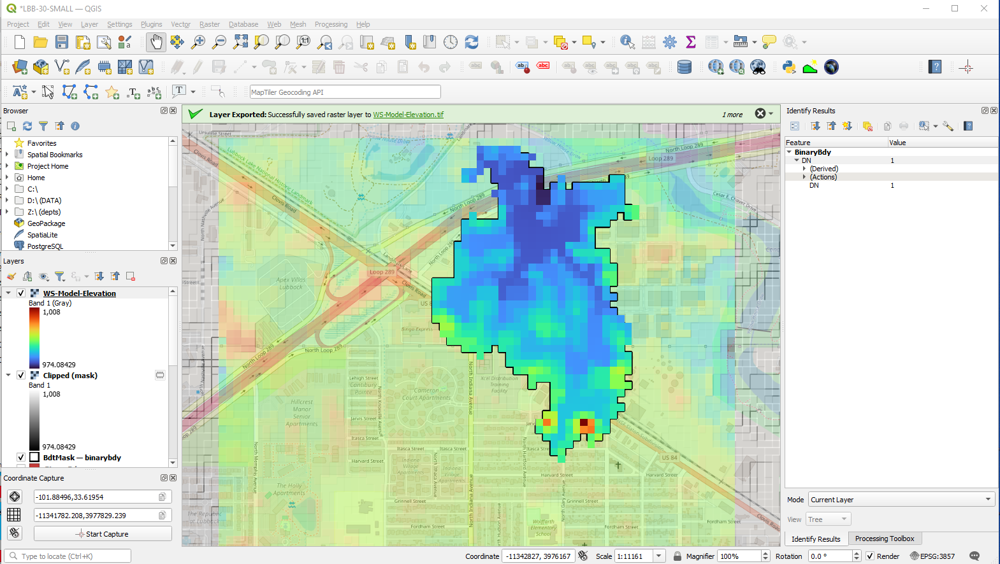 The completed DEM ready for further analysis. This should be saved, any temp files tossed or saved.
Make Watershed Measurements
Use appropriate tools for analysis:
Area Tool: Calculate watershed area
Use expression editor in attribute table for the boundary e.g. calculating polygon areas in shapefile using qgis
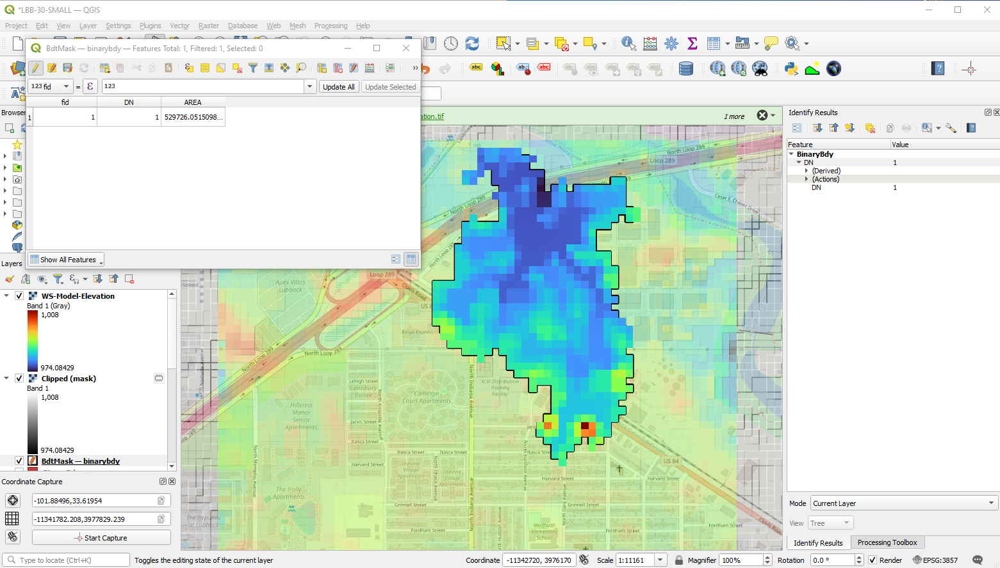 Area in sq. meters using polygon analysis is 529,726.Use the GUI tool (kind of tedious if the area has a lot of corners); its fast if you are sloppy!
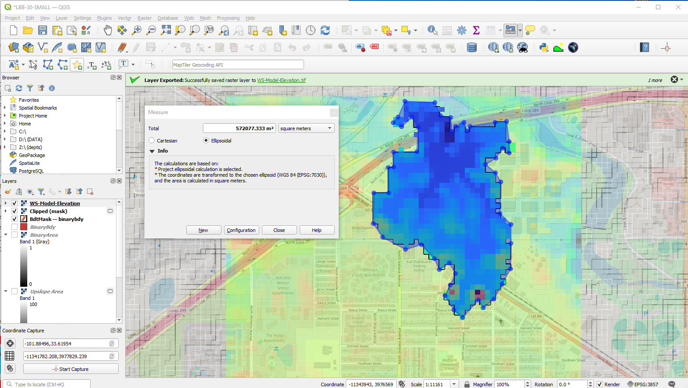 Area in sq. meters using GUI tool is 572,077.
Comparing the results below:
Method |
Value (\(m^2\)) |
|---|---|
Polygon Analysis |
529,726 |
GUI Drawing |
572,077 |
Note
The GUI tool in this instance overestimates by about 8%. This level of accuracy is common, as both manual and automated methods often differ by up to 10%. For hydrologic studies, this level of accuracy is usually acceptable because the goal is to understand general patterns and magnitudes, not exact values.
However, for tasks requiring high precision, such as property boundary surveys, even small discrepancies are unacceptable. This illustrates why it’s important to match the method’s precision to the intended application.
Distance Tool: Measure channel/flow path lengths. 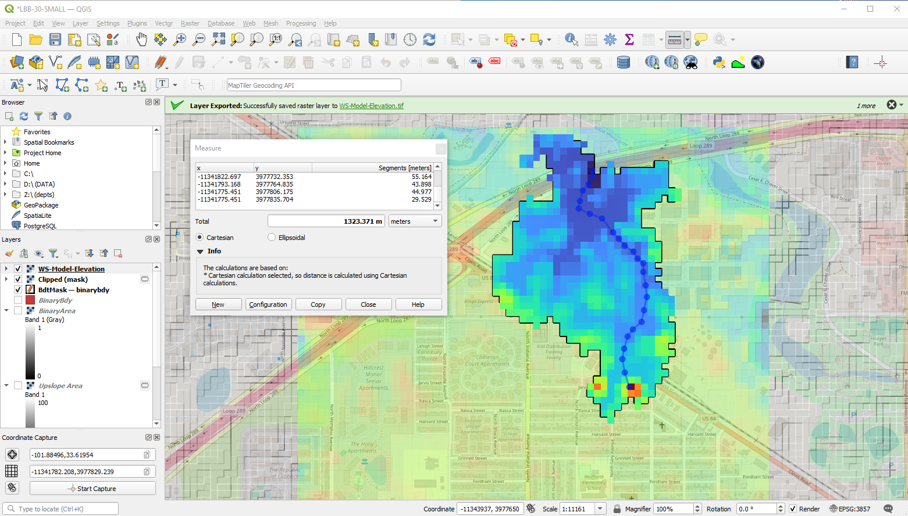
Profile Tool: Create elevation profiles
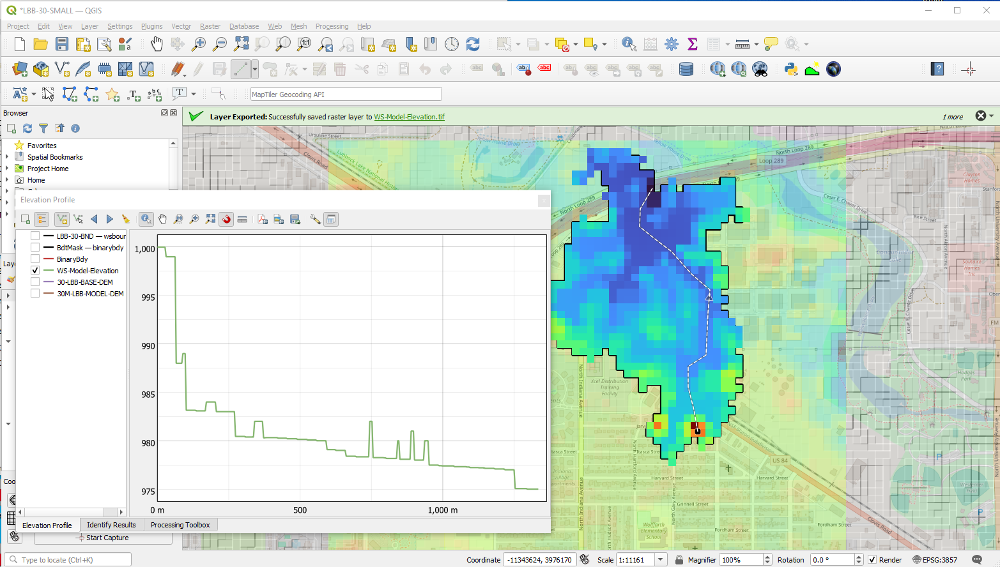 Profile tool open with a drawn path and elevation plot
Summary of QGIS Workflow Steps#
Set up QGIS and plugins
Download and preprocess DEM
Fill sinks and delineate watershed using upslope area
Convert results to vector mask
Clip DEM for watershed-only use
Perform area, distance, and profile measurements
Additional Examples of QGIS Workflow#
Florida Watershed Workflow Notes (PDF) This is the Florida watershed above.
Watershed Delineation Workflow Using ESRI ArcGIS#
Note
The instructor does not currently use ArcGIS products and has not used them in over 30 years. This workflow is provided for students who have access to ArcGIS through their employers. The general principles and steps are conceptually similar to QGIS, and should be adaptable using standard ArcGIS tools.
Support for this specific workflow is limited; however, all tasks are based on core GIS operations common across platforms.
Start a New ArcGIS Project
Open ArcGIS Pro or ArcMap.
Set your project coordinate system to
EPSG:3857(Web Mercator), or to your preferred UTM zone for better measurement accuracy.Add a basemap layer, such as OpenStreetMap or ESRI’s Topographic Basemap.
Identify Your Study Area
Pan/zoom to center the view near:
Longitude: -101.88107
Latitude: 33.61399
Note the bounding extent or draw a polygon for the area of interest.
Download Elevation Data
Use the USGS 3DEP Lidar Explorer, EarthExplorer, or ArcGIS Living Atlas to obtain SRTM 30m DEM for your study area.
Add the raster to your map.
Reproject the DEM
Use Project Raster tool to reproject the DEM to match your project CRS (e.g.,
EPSG:3857).
Clip DEM to Study Area
Use Extract by Mask or Clip Raster.
Input: Reprojected DEM
Mask: Polygon covering the study area
Set no_data to
-9999
Fill Sinks in DEM
Use Fill tool from Spatial Analyst → Hydrology
This prepares the DEM for accurate flow direction modeling.
You may need to enable the Spatial Analyst extension.
Delineate the Watershed Outlet
Use a hillshade render or contour lines to identify the likely outlet point (e.g., northeast corner).
Use the Identify tool or cursor readout to obtain the Easting and Northing of the outlet.
Flow Direction and Accumulation
Use Flow Direction tool on the sink-filled DEM.
Then use Flow Accumulation tool to determine upslope contributing areas.
Delineate the Watershed
Use Snap Pour Point to align your outlet point with the nearest high-accumulation cell.
Then use Watershed tool to delineate the contributing area.
Convert Raster Watershed to Polygon
Use Raster to Polygon to convert the watershed raster into a shapefile or feature class.
Clip DEM to Watershed Boundary
Use Extract by Mask again, this time using the watershed polygon as the mask layer.
This will trim the DEM to just the contributing area.
Analyze the Watershed
Use built-in tools to analyze basic watershed metrics:
Measure Tool for distances and path lengths
Zonal Statistics for elevation ranges
3D Analyst or Elevation Profile Tool for longitudinal profiles
Summary of ArcGIS Workflow Steps#
Set up project and coordinate system
Download and reproject DEM
Clip DEM to study area
Fill sinks
Generate flow direction and accumulation
Identify and snap outlet point
Delineate watershed
Convert to polygon and clip DEM
Perform measurements
Tip
For students who are familiar with ArcGIS Pro, many of these tools are accessible through the ModelBuilder or Geoprocessing Toolbox, and can be automated for batch processing.
4.2 Watershed Metrics (General Concepts)#
Now that the watershed is identified and demarked we can measure a few commonly used and important physical properties. These measurements are used are to characterize the fundamental unit in surface water hydrology which is the watershed.
A watershed is defined as the area on the surface of the earth that drains to a specific location.
A minimal description of watershed properties must include:
Area
Main channel length
Slope (requires the specification of path), The MCS is usually reported as is the average slope (highest point on the boundary to the pour point). The transverse slope is often reported too.
Soil permeability
%-impervious (developed)
Note
Many of the references above were originally developed for manual (by-hand) analysis, which predates today’s GIS-based workflows. While we now rely heavily on automated tools, learning the manual methods builds a strong foundation in the core concepts and arithmetic that underlie all hydrologic analysis.
These skills aren’t just academic—understanding the logic behind the tools allows you to interpret results more critically, spot errors, and even work in data-sparse or hypothetical situations where maps don’t yet exist—like on Mars, or other Class M planets in the known universe. Welcome to the frontier of astro-hydrology!
Measuring Area#
If the grid cells used in delineation (by-hand) are all squares, one can count the squares contained in the watershed, multiply by the per-cell area and have a good estimate of the watershed area.
If using GIS there is usually an area measurement tool; one can use it, or use the Ones raster mask information to count squares and convert into useful values
Measuring Length(s)#
Similar to area, you can count cells along a path and multiply the count by the length of a cell side, or the cell diagonal (depends on how many diagonal moves you need to make) to obtain a length. Or use software (Acrobat Pro, AutoCAD, Engauge, ArcGIS, QGIS, …. ) to make the measurements.
Estimating Slope(s)#
Slope estimates require two components
A path with a length (\(S\))
The change in elevation along the path (\(\Delta z\))
The dimensionless slope is simply the ratio of the two \(\frac{\Delta z}{S}\). Percent slope is the dimensionless slope multiplied by 100. Sometimes slope is expressed in units of \(\frac{ft}{mi}\) or \(\frac{m}{km}\), while meaningful these will have to be converted into dimensionless or %-slope for most hydrologic computations.
Estimating Soil Properties#
Subjective when using paper maps, but reasonable values can be inferred from soil maps - either paper-based or electronic Web Soil Survey
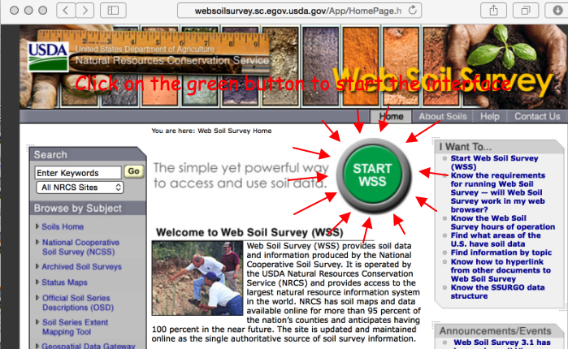
Note
There is a GIS plug-in that can directly access the USDA database.
Estimating %-Impervious#
This is subjective, but one reasonable approach is using Google Earth
Find the area of interest
Select a viewing height (needs to be same for all areas if you are going to have to scroll)
Put a grid on the screen (physical grid on see‐thru plastic, or use a china marker and draw on the screen)
Count concrete vs not concrete – relative ratio is a useable estimate of the % impervious
Note
This would be a good task to hand off to a machine learner model. Take the area of interest, capture an image, have the ML model count pixels that are NOT CONCRETE (brown, green, …..).
Land use coverages are available in GIS that could be used.
USGS StreamStats#
In many states one could also use an on-line tool called StreamStats
For example a culvert on Snake Creek in Oklahoma can be examined and will produce the delineation below

Once the watershed is defined, download the shapefile(s) into your GIS and proceede with your remaining hydrological tasks.